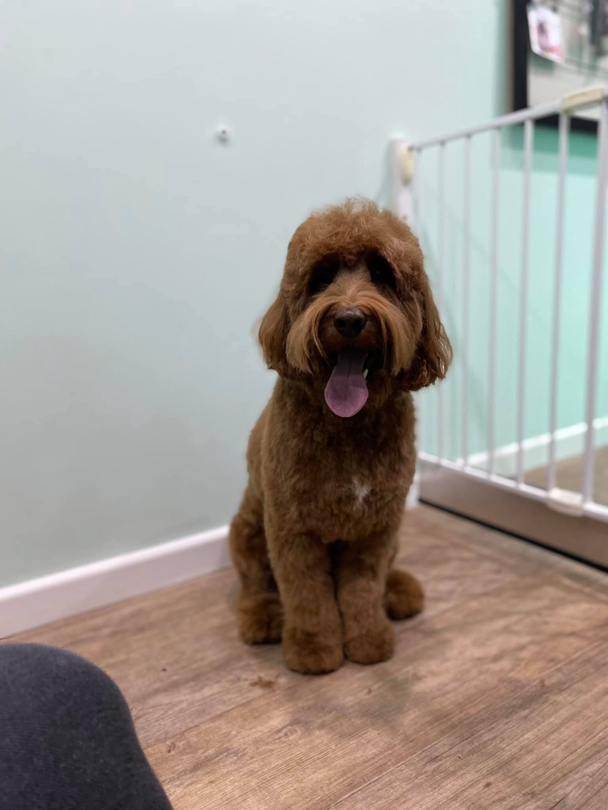

Behandelingen & prijzen
Voor kleine en middelgrote honden, volgens rasstandaard of naar eigen wens. De prijs is vast per ras.
Wat we voor uw hond doen
Alles kan, zolang het welzijn van uw hond niet in het gedrang komt. We bespreken vooraf wat u verwacht en wat mogelijk is.
Trimbeurt
Rasstandaard of eigen wens
Wassen, drogen, borstelen en knippen of scheren in het model dat bij uw hond past. Bij een gevoelige huid werken we met een passende shampoo.
Puppyknip
Voor pups tot 4 maanden
Een korte beurt: nagels knippen, bij de ogen en onder de poten knippen, wassen, drogen en borstelen. Zo went uw pup op tijd aan het trimmen.
Specialisaties
Effileren en doodles
Gecertificeerd in effileren (onder andere bij de Maltezer en Shih tzu) en in het trimmen van de Labradoodle en Goldendoodle.
De prijs is vast per ras: altijd dezelfde kosten, mits de hond verzorgd is, dus klitvrij en zonder vlooien. Prijzen zijn vrijblijvend op te vragen op 06 11 64 41 60.
- Voor kleine en middelgrote honden
- Ruwharige honden die geplukt worden, nemen we helaas niet meer aan
Uw pup thuis laten wennen
Hoe eerder uw hond went aan borstelen en föhnen, hoe prettiger de trimbeurt. Zo helpt u zelf mee.
Wennen aan de föhn
Föhn uw eigen haar waar de pup bij is, zodat hij went aan het geluid. De pup zelf föhnen mag op de koude stand, niet op zijn kop gericht en zonder er een spelletje van te maken.
Elke week borstelen
Begin ongeveer 3 dagen nadat de pup bij u woont, ook al zijn de haren nog kort. Gebruik bij korte haren een zachte borstel en daarna altijd een grove kam.
Zet door
In het begin is uw hond het misschien niet eens met borstelen. Merkt hij dat u doorzet, dan laat hij het gemakkelijk toe.
Op tijd borstelen
Dat voorkomt klitten en maakt het borstelen en de trimbeurt voor uw hond een stuk aangenamer.
Afspraken en extra kosten
Uit de algemene voorwaarden, zodat u vooraf weet waar u aan toe bent.
- Later dan 24 uur van tevoren afgemeld50%
- Niet gekomen zonder afmelding100%
- Te laat brengen (alleen in overleg)€ 9,50 per kwartier
- Later dan 15 minuten ophalen€ 35 per uur
- Behandeling bij vlooien€ 10 extra
- Klittenextra kosten
Laat uw hond goed uit voordat hij naar de salon komt, en meld het als uw hond loops is. Een zieke hond behandelen we niet. Betalen kan met pin of contant bij het ophalen.
Afspraak maken
De salon is alleen open op afspraak. Bel voor een afspraak of een vrijblijvende prijsopgave, ook als u nog geen hond heeft maar wel informatie zoekt.
Openingstijden
- Maandag t/m vrijdag8:00 - 17:00
- Alleen open op afspraak